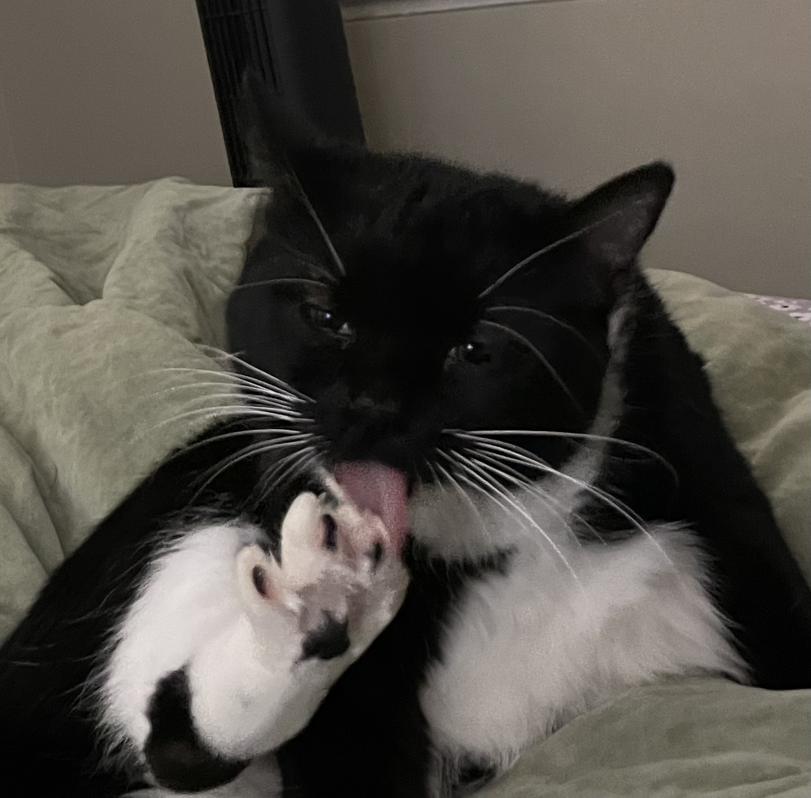

|  | |||
| Osa | Molly | Sabrina | Freya |
Osa was born in 2017 and has a very aloof and sassy personality. She loves eating, playing with Molly, and lying in the sun. Osa is also a unique toothless cat. She had her teeth extracted at a young age due to a rare disease. This does not damper her spirit though! |
Molly was born in 2022 and is the silliest cat I have ever known. She is extremely playful and loves to bother her sisters. Molly can often be found causing trouble or cuddling up on her mom. Molly was the last adopted cat in the family, but we feel she was meant to be ours. |
Sabrina was born in 2020 and loves people. She loves attention from strangers and pets. Sabrina will approach any stranger with no fear whatsoever. Anyone who is willing to pet her is a friend. Sabrina loves to find cozy spots to sleep and be lazy all day long. |
Freya was born in 2022 and is nicknamed "The Creature" in our house. She is very timid but loves her family. She goes through spurts of crazy energy and will act in the funniest ways for attention. She makes all sorts of silly sounds and will climb anything she can find. |
Back to Home